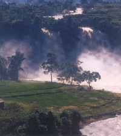
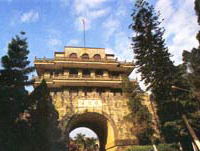

德天大瀑布与越南板约瀑布相连，堪称为世界第二大跨国瀑布。其气势，震撼摄魄，撼动心旌。
越南板约瀑布就在德天瀑布的河对岸，高40米，宽70余米。较德天瀑布之雄奇，越南板约瀑布显得温柔可爱，楚楚动人。

左江斜塔
白头叶猴
友谊关

小连城

黑水河风光
在中国境内购物的越南边民
归春河源起我国靖西县，终年有水。流经越南又回流广西，有着归国回来遇春之意，故以此命名。从硕龙镇到德天瀑布，归春河十里蜿蜒相伴，中越两国以河为界。隔河相望，一边是颇具神秘色彩的异国风光，一边是别具一格的边民小楼或壮族民族特色的“干栏” 房，其景其情，令人陶醉。

广西与越南山水相连，有1020公里的陆地边界线，两国边民以河为界，鸡犬相闻，民间民俗、语言文化互相交融，形成独特的风景线。这里有奇丽诡秘的边界风光，两国风物交杂奇异情调，壁垒森严的古今要塞，边关口岸商贾云集的盛况，更有许多著名的名胜古迹。
作中越边关旅游，一般有两条线路。一条线是从南宁往东兴方向。另一条线是从南宁往凭祥方向，这条旅游线经由扶绥、崇左、宁明、凭祥、龙州、大新、隆安等县市，这一边境旅游线自然景观、人文景观丰富多彩，主要的景点（区）有：左江花山风景区，那里有堪称世上“两绝”的花山原始崖壁画群和白头叶猴；中国九大名关之一的友谊关和边关要塞金鸡山；世界第二大跨国瀑布德天瀑布；世界八大斜塔之一的崇左斜塔；别具边关特色的中越边贸市场；天然盆景式石林景观崇左石景林；展示中法战争历史的中法古战场旧址、小连城、古炮台、大清国万人坟、法国领事馆等；山水秀丽的丽江、黑水河风光、富有亚热带特色的陇瑞动植物保护区、龙虎山自然保护区；此外还有随处可见的秀美的喀斯特地貌田园山水风光和浓郁的民族风情等。这一切构成了多姿多彩的边关旅游线路。到边关旅游，当然还可以跨越中越边境，到越南的谅山、河内、下龙湾、海防市、胡志明市等感受一下异国情调，过一过“出国瘾”。
千古之谜----花山壁画 相关链接：追寻先民的智慧杰作
左江壁画，又名花山壁画，位于崇左县境内孔甲村双对机山至雷州乡陇狗山的左江两岸，全程80公里，共有双对机山、驮柏山、黄巢城山等28处崖壁画点，这些崖壁画不仅分布在左江两岸的峭壁上，有多处是远离左江数公里的陆上崖壁画。这些壁画多为各种姿态的人像，作画地点悬崖峭壁、高陡艰难，时间约在战国早期至东汉。其中，又以驮柏山壁画为最。该处壁画点作在驮柏山西南长约100米的陡峭崖壁上，北距驮柏街约50米，西北距驮柏新街1公里，隔江西距卜湍屯 0.75公里，与下游的银山崖壁画相邻。
世界八大著名斜塔之一----归龙斜塔
左江斜塔，又名归龙塔，水宝塔，是世界八大斜塔之一，位于崇左县城东北2公里处，建在左江中的石头岛——鳌头峰上，处急弯激流之中地势惊险。
该塔是明朝知府李友梅于天启元年（1621年）建造，当时建三层，清康熙三十五年（1629年）知府徐越加建两层，成为五层砖塔，塔底直径5米，塔身高 18.28米，塔身呈八角面体。塔八面正檐，每一檐角悬挂铜铃一个，随风摆动叮当作响，悦耳动听。塔内螺旋砖梯逆时针盘绕至顶层，人走在阶梯上,斜感很强,据测，塔身倾斜度为4o24′64″，倾斜方向为西南偏西52o16′30″。
宝塔呈歪斜欲倒之势，加上宝塔孤单地屹立在高出水面2丈多的鳌头峰顶和鳌头峰正处在左江九十度转弯处，湍急的左江奔腾而来，江面漩涡翻卷，波涛滚滚，水声哗哗，更增加了宝塔摇摇欲倒的危势，站在塔脚下，真令人有点心惊内跳。然而，虽经年长日久的风雨侵袭，砖面给蚀成斑凹痕，青苔蕨隐生其上，但宝塔仍纹丝不动，巍然屹在鳌头峰上，蔚为奇观。倾斜的宝塔，世上不多见，而座落在左江的激流漩涡中间，更属奇观。
世界珍奇动物白头叶猴最后的家园----崇左白头叶猴生态公园
崇左白头叶猴生态公园位于广西西南部崇左县罗白乡，距崇左县城35公里，312国道板德线切边而过，322国道横贯其中，是大西南通道的重要交通枢纽，离南宁市仅130公里。整个景区占地面积约为30平方公里，是广西重点开发的旅游景点之一。这里年平均降雨量1400毫米，年平均气温220C左右，生长着 1400多种植物，其中有世界上珍奇植物和优良速生树种，如金花茶、金丝李、宪木、格郎史等。在保护区内，生存有100多种动物，其中有世界独有的动物珍品---白头叶猴共18群240多只，白头叶猴全球仅存700只左右，全部分布在我国广西西南部的崇左、宁明、龙州、大新、扶绥等县，且以崇左县罗白与板利两乡交界处为其重要分布区。1996年10月至今，以北京大学潘文石教授为首的13位专家组成的科研组进驻生态公园进行科研考察。白头叶猴不仅因娇小活泼，机灵可爱，樊沾于悬崖峭壁之间，具有很高的观赏价值，更因为它具有重要的科学研究价值而引起学术界的重视，其价值可与大熊猫媲美，已被国际自然保护协会列为濒危动物。在这里，四处是郁郁葱葱的原始森林，在丛山深谷之中，可以欣赏到大自然的山水风光，领略到大自然王国原始风貌的乐趣，又能够观赏到种类繁多的稀有珍贵动植物，同时这里也是进行多种学科考察的神秘之处。
中国九大名关之一--- 友谊关
凭祥自古就是桂西南的边防要地,境内山峦连绵起伏的国境线上,设有多处关防,如平而关、叫隘关、油隘关等，友谊关则是最大最重要的关防，是祖国的南大门。它位于凭祥市区西南18公里处，这里两边高山矗立，形势险骏，友谊关恰好卡在峡谷通道上。它是一座城楼式的高大建筑，楼高4层，共22米高，底层是厚实的城墙，中央为园拱顶的城门，非常雄伟。镶在拱门上“友谊关”三个金色的大字，为陈毅元帅亲笔题书。
友谊关历史上又叫镇南关，始建于明代洪武年间，它是中国古代九大名关之一，历代为中国南疆边防要隘、战略要地。1885年，清军名将冯子材率军在此痛击法国侵略者，取得举世闻名的镇南关大捷；1907年，孙中山，黄兴在此领导了永载青史的镇南关起义。如今这里还留有中法战争古战场，大清国万人坟等战迹遗址。五十年代，经周总理批准，改名睦南关。后来，为彰示中越两国人民“同志加兄弟”的深厚情谊，又改名为“友谊关”。
南疆长城----小连城
龙州地处祖国南疆要塞，有１８４公里的中越边境线。边境线上有许多古营垒、古炮台、古战场，在距龙州城西边１０里处的将山上，有一条“灰色长龙”，蜿蜓伸展在座座峰峦之间，绵延数十里，相连一体，这便是有名的古炮台群——小连城。
小连城为清末广西提督、抗法将领苏元春所建。中法战争后，为更好防御外敌入侵，他“取连城要塞，屯兵积粮”，在山巅筑左、中、右三座炮台，并修建兵房和道路，左可阻挡镇南关孔道，右可控制水口关隘口，与下冻、水口炮台连成一体，气势雄伟壮观。山腰的石窟寺庙——龙云洞内建有保元宫，是苏元春的指挥部，洞中依洞设景，别有天地。山的南麓建有光禄寺和极恩亭。西麓的小垒城用石灰岩料石砌成长墙，与山巅的炮台相连，气势恢宏，不愧为“南疆长城”。东麓群峰环抱，形似“山肚”，是苏元春的营盘。相传苏元春为解决军队的饮水问题，曾宴请当地百姓指点水源，有一位不速之客自带筷子赴宴，态度非常高傲，苏元春以礼相待，殷切恳求，终于靠他找到了泉眼，稳定了军心。
世界第二大跨国瀑布----德天瀑布
德天瀑布位于大新县归春河上游，距中越边境５３号界碑约５０米。清澈的归春河是左江的支流，也是中越边境的国界河，德天瀑布则是它流经浦汤岛时的杰作。浩浩荡荡的归春河水，从北面奔涌而来，高崖三叠的浦汤岛，巍然耸峙，横阻江流，江水从高达５０余米的山崖上跌宕而下，撞在坚石上，水花四溅，水雾迷朦，远望似缟绢垂天，近观如飞珠溅玉，透过阳光的折射，五彩缤纷，那哗哗的水声，振荡河谷，气势十分雄壮。瀑布宽１００多米，纵深６０多米，落差近５０米，是东南亚最大的天然瀑布，也是世界第二大跨国瀑布，被国家定为特级景点。它与越南的板约瀑布连为一体，就像一对亲密的姐妹。中越边民在瀑布的下游，进行着边贸往来，以前是肩挑人扛，现在已用车船运载了。
亚热带岩溶雨林地貌公园----龙虎山自然保护区
龙虎山在隆安县境内，距县城３５公里，离南宁有９２公里的路程。风景区有９７．２％被原始森林覆盖着，幽深而神秘，渌水江就像一条绿色的飘带蜿蜒其间，江水清澈平静，鱼虾历历在目。江的两岸群峰叠翠，古木参天。这片原始森林约有８．６平方公里，生长着１１００多种植物和上百种动物，有不少珍稀植物和国家一、二类保护动物，“茶族皇后”金花茶在这里有适宜的生长条件，连片成林，争研斗奇。龙虎山还有一座座宛如巨型盆景的石林，一个个千姿百态的溶洞。当然，最具龙虎山旅游特色的，也是最惊险刺激的就是观猴了。
广西是著名的猴乡，但城里人也只有在动物园才能看到猴子。但在龙虎山，人们可直接与野生的猴子玩耍。龙虎山既无老虎，更无神出鬼没龙，有的只是成群结队的猴子。俗话说山中无老虎，猴子当大王。峨眉山也是著名的观猴区，但据说那里的猴子十分顽劣，经常干些“打家劫舍”的勾当，游客的照相机什么的也敢抢。比较起来，龙虎山的猴子就显得规矩多了。它们也顽皮捣蛋，比如游客过铁索桥时它们在另一边拼命摇晃，等等，但它们一般不抢游客的东西，只是远远地等着游客抛食物给它们吃，大胆的游客尽可以前去逗弄它们，与它们合影留念。